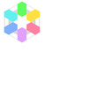

透明度を含む画像を JPEG に変換する時の背景色
- もうサムネイルで泣かないための ImageMagick ノウハウ集
透過画像をそのまま JPEG に変換すると背景色が黒になるので、
白にしたい場合は同じサイズにリサイズしましょう。
実際のところ
そのまま JPEG に変換すると背景色は白になります。
$ convert in.png out.jpg
-resize でサイズが変わった時に黒くなります。
$ identify in.png awmcorp_logo.png PNG 300x300 300x300+0+0 16-bit sRGB 21.1KB 0.000u 0:00.000 $ convert in.png -resize 300x300 out.jpg $ convert in.png -resize 200x200 out.jpg
詳しくは追っていませんが、リサイズでピクセルの補完アルゴリズムが働く際に黒(0,0,0)を元に加色混合でピクセルを計算していくのだろうと想像してます。(要調査)
-extent で背景を白にできる
$ convert in.png -resize 200x200 out.jpg $ convert in.png -resize 200x200 -extent 200x200 out.jpg
-extent は描画領域であるスクリーンを拡大する命令です。拡大された白いキャンバスと画像のレイヤーが別なので重ね合わせた結果、背景が白くなります。
$ convert in.png -resize 200x200 –extent 400x400 out.jpg 
-flatten (レイヤーを重ねる命令)が正しい
-extent でも同じ結果になるので重箱の隅をついてるようですが、レイヤーを重ねれば良いので -flatten を使うのが意味的に正しいと思います。
$ convert in.png -resize 200x200 –flatten out.jpg
-background も有効です。
$ convert in.png -resize 200x200 -background red –flatten out.jpg